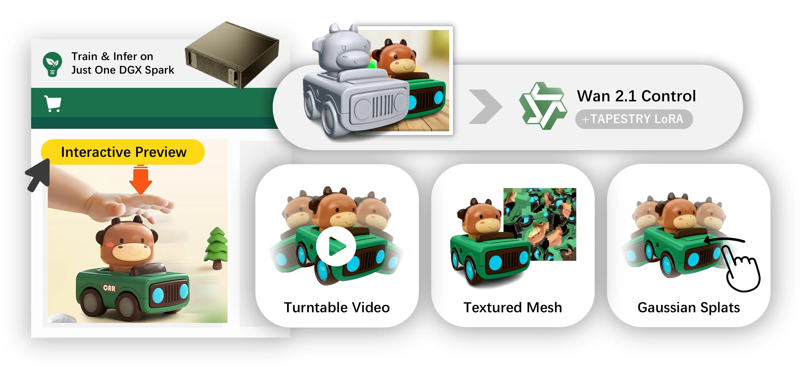

TAPESTRY: From Geometry to Appearance via Consistent Turntable Videos
Research overview
TAPESTRY gives untextured 3D meshes coherent appearance through geometry-conditioned turntable videos. Rendered geometric features guide video generation so that the object remains consistent across viewpoints. A subsequent reconstruction process fills self-occluded areas and transfers the generated appearance into textures or neural representations, connecting video synthesis with complete 3D asset creation.
Summary · Read original ↗01 / 01
